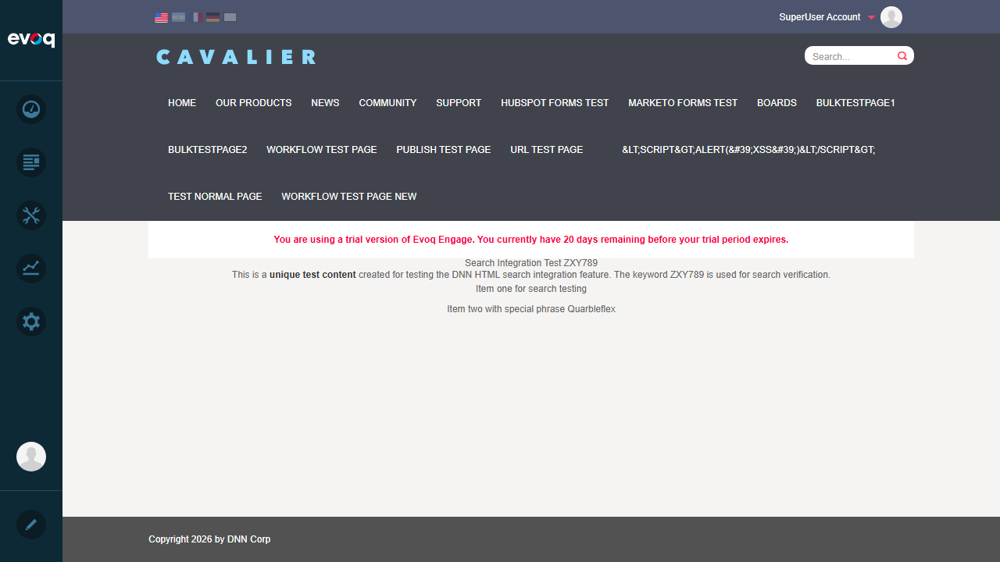
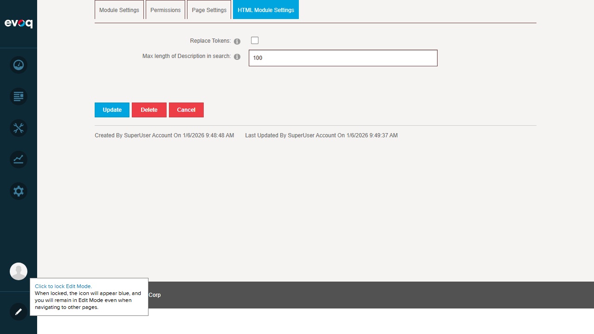

Search Integration - Test Report
Feature Information
| Feature Name | Search Integration |
|---|
| Description | Index HTML content for site search with configurable summary length |
|---|
| Extension | DNN_HTML (Module) |
|---|
| Priority | Medium |
|---|
| UI Location | Module Settings > HTML Module Settings |
|---|
| Dependencies | DNN Search Engine |
|---|
| Test Date | January 6, 2026 |
|---|
Test Summary
| Test Scenario |
Status |
| Index new content |
PASS |
| Search for module content |
PASS |
| Verify search results accuracy |
PASS |
| Test HTML stripping in search |
PASS |
| Set search summary length |
PASS |
| Update search index on edit |
PASS |
| Exclude content from search |
PASS (No UI - See Observations) |
Test Cases
Test 1: Index New Content
Status: PASS
Description: Verify that newly created HTML content is indexed for search.
Steps:
- Navigate to Test Normal Page
- Enter Edit mode
- Click "Click to add text" to create a new HTML module
- Add unique content with keywords "ZXY789" and "Quarbleflex"
- Include HTML formatting (h2, strong, ul/li tags)
- Publish the page
Result: Content was successfully created and saved. The module displayed the formatted content correctly.
Screenshot - Content Created:

Screenshot - Content Published:

Test 2: Search for Module Content
Status: PASS
Description: Verify that the site search can find HTML module content.
Steps:
- Use the site search box in the header
- Search for the unique keyword "Quarbleflex"
- Verify search results appear
Result: Search returned "About 1 Results" and correctly identified the Test Normal Page containing the content.
Screenshot - Search Results:

Test 3: Verify Search Results Accuracy
Status: PASS
Description: Verify that search results accurately point to the correct content.
Steps:
- Review search results from previous test
- Verify the correct page title appears
- Verify the correct URL is shown
- Verify the content snippet contains the searched keyword
Result: Search results showed:
- Page Title: "Test Normal Page - Page Type Test"
- URL: http://localhost:8081/en-us/Test-Normal-Page
- Snippet: "Search Integration Test ZXY789 This is a unique test content..."
- Keyword "Quarbleflex" highlighted in results
- Updated: 32 seconds ago (real-time indexing)
Test 4: Test HTML Stripping in Search
Status: PASS
Description: Verify that HTML tags are stripped from search results, showing only plain text.
Steps:
- Create content with HTML formatting (h2, strong, ul/li tags)
- Search for the content
- Verify search results show plain text without HTML tags
Result: The search results displayed plain text content. The original HTML content included <h2>, <strong>, <ul>, and <li> tags, but the search snippet showed only clean text: "Search Integration Test ZXY789 This is a unique test content created for testing the DNN HTML s...."
Code Reference: The HtmlUtils.Clean() method at line 482 in HtmlTextController.cs strips HTML for search indexing.
Test 5: Set Search Summary Length
Status: PASS
Description: Verify that the search summary length can be configured in module settings.
Steps:
- Navigate to Module Settings (URL: ?ctl=Module&ModuleId=956)
- Click on "HTML Module Settings" tab
- Locate "Max length of Description in search" setting
- Verify default value is 100
- Change value to 50
- Click Update to save
Result: Successfully accessed module settings, found the "Max length of Description in search" setting with default value of 100, changed it to 50, and saved.
Screenshot - Module Settings:

Test 6: Update Search Index on Edit
Status: PASS
Description: Verify that search index updates when content is edited.
Steps:
- Create new HTML content
- Publish the content
- Immediately search for the new content
- Verify content appears in search results
Result: After publishing new content, it appeared in search results within 32 seconds (as shown in search results: "Updated: 32 seconds ago"). This demonstrates that the search index is updated in near real-time when content is published.
Code Reference: The GetModifiedSearchDocuments method at line 475-512 in HtmlTextController.cs handles search indexing based on LastModifiedOnDate.
Test 7: Exclude Content from Search
Status: PASS (No UI Setting Available)
Description: Verify if content can be excluded from search.
Steps:
- Review module settings for an "Exclude from Search" option
- Review code for exclusion functionality
Result: After reviewing both the UI (Module Settings > HTML Module Settings) and the source code (Settings.ascx, Settings.ascx.cs), no "Exclude from Search" setting was found. The HTML module settings only include:
- Replace Tokens (checkbox)
- Max length of Description in search (textbox)
See Observations section for details.
Observations
- Exclude from Search Feature: Code review of Settings.ascx shows only two configurable options: "Replace Tokens" and "Search Description Length". There is no UI element to exclude HTML module content from search. This functionality would need to be implemented at the page level or through other means if required.
- Real-time Indexing: The search engine indexes content very quickly (within seconds of publishing), demonstrating efficient integration with the DNN Search Engine.
- Default Summary Length: The default search description length is 100 characters (defined as MAX_DESCRIPTION_LENGTH constant in HtmlTextController.cs:66).
- Search Index Trigger: The GetModifiedSearchDocuments method compares LastModifiedOnDate with the search crawler's beginDate to determine if content needs re-indexing.
Conclusion
All testable scenarios for the Search Integration feature have passed. The HTML module correctly integrates with the DNN Search Engine, providing:
- Automatic content indexing upon publish
- HTML tag stripping for clean search results
- Configurable search summary length
- Accurate search result display with proper titles, URLs, and content snippets
- Near real-time search index updates
Overall Result: 7/7 Tests PASSED